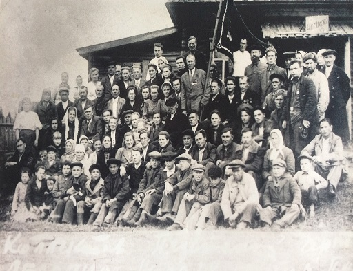
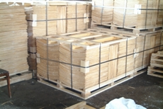

О компании

Фабрика Мебели начинает свою историю с 1927 года.
10 марта 2017 года Чепецкая мебельная фабрика отметила свой юбилейный день рождения – предприятию исполнилось 90 лет.
В первые годы своего становления предприятие занималось заготовкой дров для населения.
В годы Великой Отечественной войны фабрика выполняла различные военные заказы: лыжи для солдат, санитарные ящики и прочее. С 1965 года фабрика вновь перешла на свою специализацию - выпуск взрослого стула и детской мебели. В годы советской власти, в условиях планового производства, выпуск стула достигал 500 тысяч штук в год.
В начале 90-х годов ХХ века значительно расширился ассортимент выпускаемых изделий. В настоящее время на фабрике изготавливается 16 моделей взрослого стула на основе Ч-образной боковины, дачная и детская мебель, офисные стулья, есть участок по изготовлению мебели по индивидуальным заказам.

Сырьем для изготовления мебели является пиломатериал березовый и шпон лущеный березовый. С расширением прессовочного хозяйства широкое признание получила мебель с использованием гнутоклееных элементов – это кресла «Лотос» и «Элегант», стул «Астра». В 2010 году на предприятии был произведен запуск лущильной линии по производству березового шпона.
С августа 2007 года на фабрике начался выпуск новых моделей стульев из массива березы с использованием гнутоклееных элементов с применением технологии лакокрасочного покрытия изделий с использованием итальянского оборудования и немецких материалов. Ввод в ассортимент новой продукции продиктован покупательским спросом, который все большее внимание уделяет качественным изделиям из натуральных материалов.